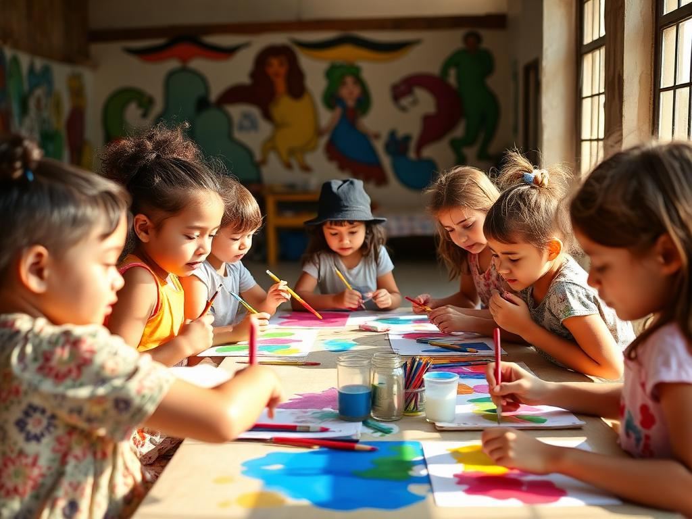

Arte que Convida
Espacios semanales de muralismo, música y juegos teatrales que estimulan la expresión y la confianza. Cada taller termina con una muestra abierta al barrio.
¿Qué hacemos?
-
01
Talleres de muralismo y pintura
-
02
Encuentros de percusión y canto
-
03
Juegos teatrales y narración oral
-
04
Muestras barriales mensuales
